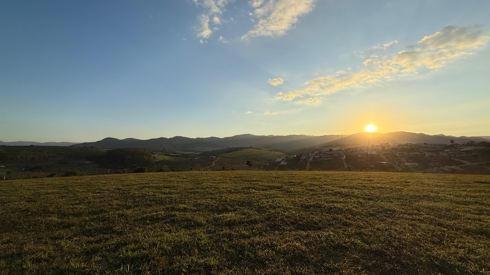

Jardim Alvorada
Loteamento
155 lotes a partir de 250m² com vista para a Serra da Canastra, hospital integrado e infraestrutura completa.
O loteamento Jardim Alvorada nasce na confluência entre localização estratégica e praticidade urbana na cidade de São Roque de Minas. Posicionado em uma das principais avenidas da cidade, oferece infraestrutura completa e fácil acesso aos principais pontos, em uma região com forte potencial de desenvolvimento.
Conheça mais →
Lotes planejados a partir de 250m², pensados para oferecer liberdade de construção, conforto e valorização em uma região com potencial de crescimento.
Área destinada ao futuro hospital municipal, trazendo mais conveniência, acesso facilitado a serviços essenciais e fortalecimento da infraestrutura da região.
Vista privilegiada para a Serra da Canastra, proporcionando um cenário natural que valoriza o entorno e acompanha o cotidiano do empreendimento.
Em uma das principais avenidas da cidade, com acesso facilitado aos principais pontos urbanos, comércio e serviços essenciais.
Infraestrutura planejada com rede de energia e vias pavimentadas, oferecendo mais praticidade, mobilidade e conforto no dia a dia.
Estrutura projetada para atender às necessidades do empreendimento, contribuindo para qualidade de vida, segurança e desenvolvimento urbano.
Uma visualização completa do empreendimento concluído das ruas e quadras ao hospital, da infraestrutura à paisagem com a Serra da Canastra ao fundo.
Os melhores lotes saem primeiro. Fale com nossa equipe e descubra a localização ideal para você.
Falar com Consultor →